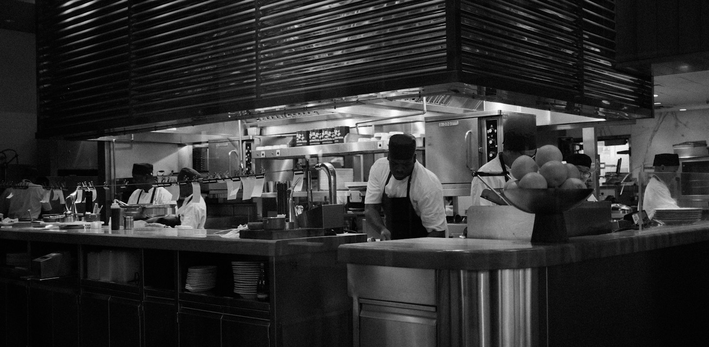
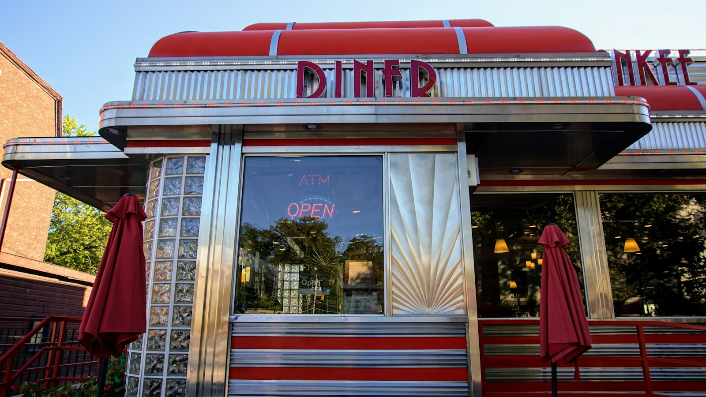

Saturday special
Saturday special
Come taste it
Reading about it is not the same as eating it.
We're open Monday through Saturday, 11:30 to 2:00. Bring an appetite, bring a friend, and come early on Friday.

Home / Our Story
Cooked from scratch, served with loveA small lunch room on West Currahee Street, run the old way: fresh vegetables, a hot pan of chicken, and enough for everybody.
Shirley's started the way most good Southern kitchens do — with a woman who could feed a house full of people without seeming to break a sweat. Word travels fast in a town like Toccoa. First it was family, then church, then the neighborhood, then a lunch room on Currahee Street with a line down the sidewalk by noon.
Today the cafe runs six days a week for lunch only. The pots go on early. Greens get seasoned and left to simmer. Chicken gets floured and fried in batches so nothing sits under a lamp. Cornbread comes out of the oven while the doors are still unlocking.
"You don't have to be fancy to be good. You just have to cook it like you mean it."
The menu is written by what's fresh and what sold out last time. If the yams went fast on Tuesday, they'll be back Thursday. If somebody's been asking for dressing and gravy, dressing and gravy shows up. Regulars call ahead to ask what's on the line — and the answer is usually fried chicken, because the answer is usually fried chicken.
When the pans don't quite empty, the food doesn't go in the trash. It goes to folks who need it. That part of the work has been going on as long as the cafe has, quietly, without a sign on the door. It's the same reason people bring their grandkids in and the same reason the same faces come back every week.

124 W Currahee StCollards and turnips are picked through and washed by hand. Nothing comes out of a can and tastes like it.
Chicken and fish are fried in small batches through the lunch window — never held, never reheated.
You'll be greeted, told what's good, and sent off with a full plate. That's the whole business plan.
Saturday specialWe're open Monday through Saturday, 11:30 to 2:00. Bring an appetite, bring a friend, and come early on Friday.